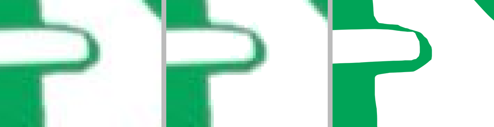
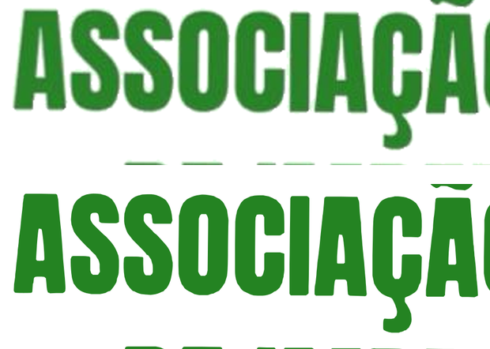
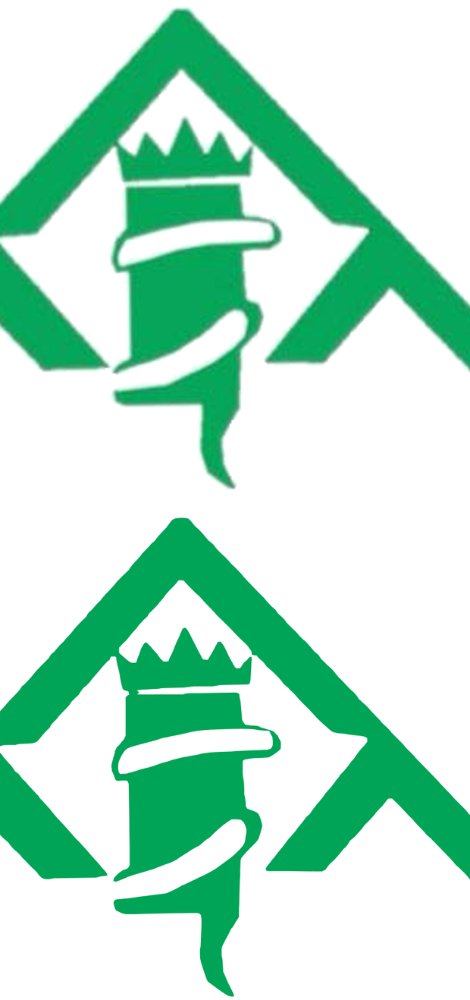

Mesmo desenho do arquivo original, agora em vetor. O contorno foi traçado sobre o bitmap, não redesenhado — as assimetrias e o caráter da marca continuam lá.
Comparando a área de tinta do vetor com a do bitmap, renderizados no mesmo tamanho. Valores negativos significam que o vetor tem menos tinta — ou seja, não engordou o desenho.
| Parte | Bitmap | Vetor | Diferença |
|---|---|---|---|
| Símbolo | 15,64% | 15,58% | −0,4% |
| Letreiro | 35,53% | 34,70% | −2,3% |
Onde o corpo da serpente encosta na coluna existe, no arquivo original, uma linha de um pixel e meio-transparente: os valores de alfa oscilam entre 28 e 239 ao longo dela, com zeros no meio. É a aresta que faz a serpente ler como contínua, e ela é frágil demais para sobreviver a um limiar alto — quebra em pedaços e a serpente parece cortada.
Não é uma fresta entre duas áreas cheias, então fechamento morfológico não resolve. O que resolve é calibrar o limiar. Testando três valores, o de 130 acabou sendo ao mesmo tempo o que preserva a aresta e o mais fiel no conjunto:
| Limiar | Símbolo | Letreiro | |
|---|---|---|---|
| 105 | −2,9% | −5,7% | aresta quebrada |
| 130 | −0,4% | −2,3% | aresta preservada |
| 155 | +3,8% | +1,8% | desenho engordado |
Ampliação da ponta da volta, na ordem JPEG original, PNG limpo e vetor:

O traçador devolve os contornos internos — os furos do O, do A, do Ç e as voltas da serpente — como subcaminhos que só vazam sob a regra de preenchimento evenodd. Sem ela, todo furo é preenchido. Comparação em detalhe, original em cima e vetor embaixo:

Letreiro
SímboloQualquer resto de moldura branca apareceria aqui.
O mesmo arquivo, do favicon ao banner. Não há mais um teto de resolução.
| Arquivo | Peso | Uso |
|---|---|---|
| ami-marca.svg | 22,7 KB comprimido | Marca completa. Cabeçalho, rodapé, documentos |
| ami-simbolo.svg | 8,5 KB comprimido | Símbolo isolado. Favicon, ícone, avatar, marca d'água |
| ami-marca-2400.png | 183 KB | Raster grande, para onde SVG não é aceito |
| ami-simbolo-1200.png | 28 KB | Idem, só o símbolo |
| ami-marca.png ami-simbolo.png | 602 px 529 px | Bitmap limpo em tamanho nativo, antes da vetorização |
A marca é verde-escura, então sobre a faixa verde-800 prevista na direção de arte ela some. Vetorizar não muda isso. Duas saídas viáveis:
1 · Cabeçalho claro — recomendado
O verde-escuro continua estruturando o site nas outras faixas: herói da home, bloco institucional e rodapé. Só o cabeçalho muda.
2 · Cabeçalho escuro com placa branca
Mantém o verde-800 do plano original, mas reintroduz o retângulo branco que a transparência tinha resolvido.
fill. Continua sendo alteração de cor,
e por isso continua sendo decisão sua, não minha.